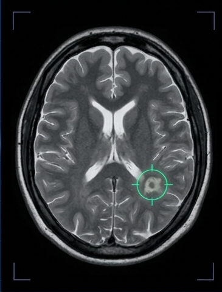
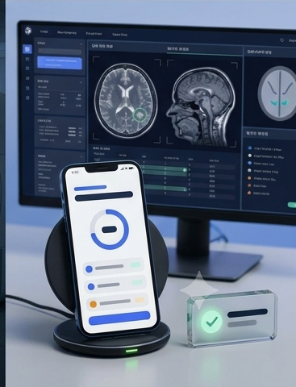

1
예약계정 만들고 예약하기
회원 가입 후 가까운 검진 센터와 원하는 날짜·시간을 고르세요. 간단한 건강 문진도 온라인으로 작성합니다.

2
촬영약 22분 MRI 촬영
편안한 가운으로 갈아입고 누워 있으면 됩니다. 한 번의 촬영으로 최대 13개 장기를 살펴봅니다.

3
판독전문의 영상 판독
영상의학과 전문의가 촬영된 영상을 꼼꼼히 판독하고 이상 소견 여부를 확인합니다.

4
플랜맞춤 리포트 & 플랜
10일 이내에 이해하기 쉬운 리포트를 받아보세요. 결과에 따라 다음에 무엇을 하면 좋을지 구체적으로 안내해 드립니다.